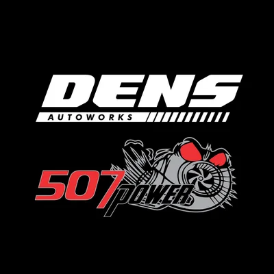
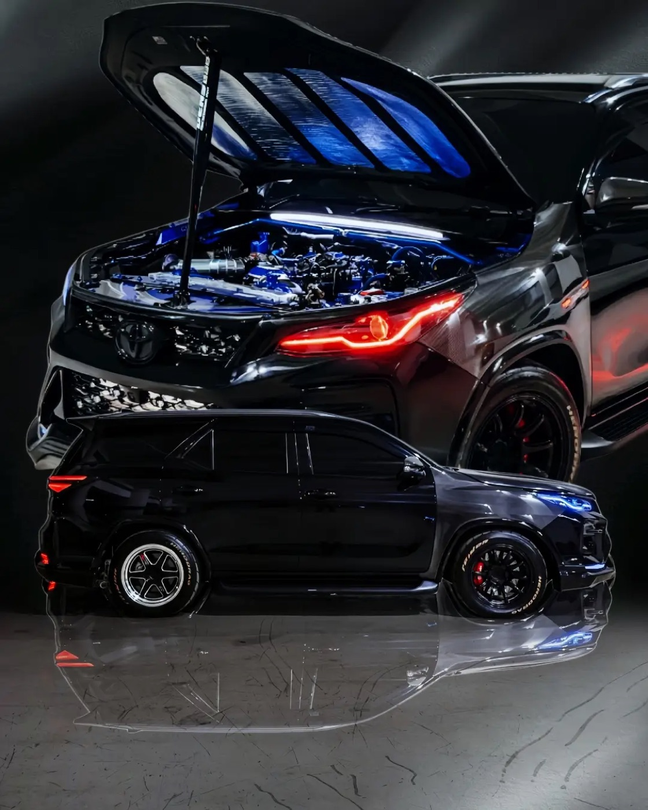
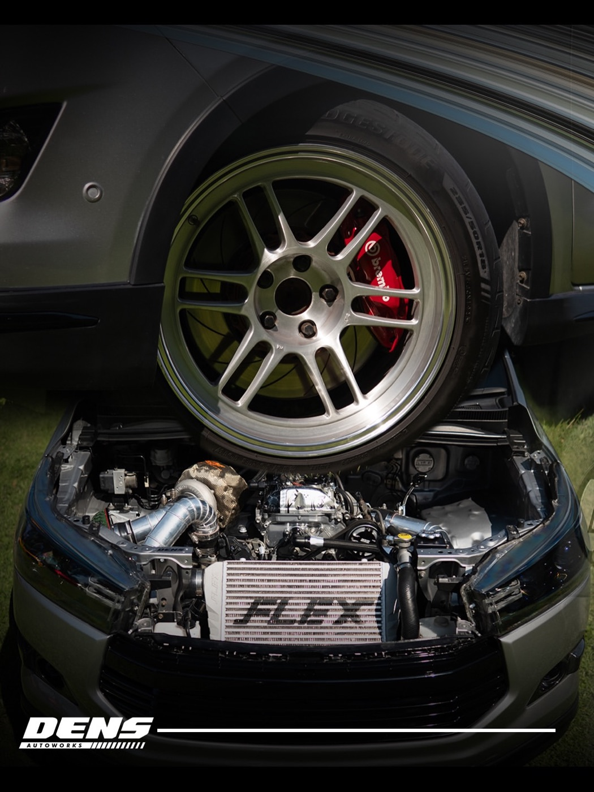
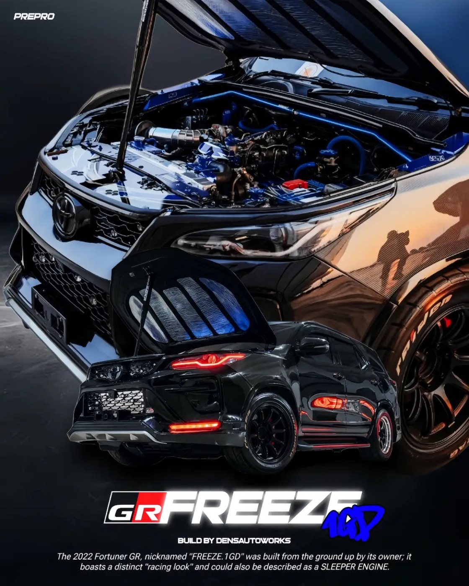
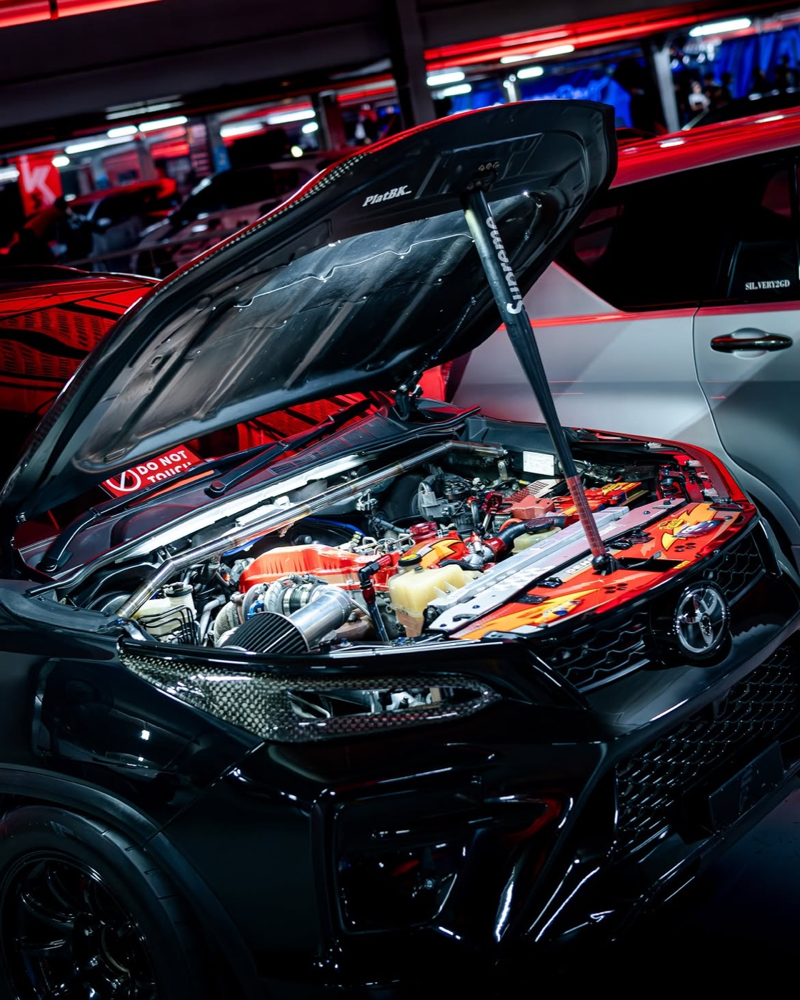

Dens Autoworks507
Bengkel Spesialis Diesel · Alam Sutera
Remap ECU 507 Power, modifikasi diesel sampai spek monster, dan perawatan khusus diesel. Power ngejambak, tetap aman buat harian.


Remap ECU 507 Power
Dari pabrik, mesin diesel modern sengaja ditahan. Remap 507 Power membuka tenaga dan torsi yang selama ini disimpan ECU, dikerjakan langsung bareng tuner 507 (@ronnyhao507), dengan setelan yang tetap aman untuk pemakaian harian.
Layanan
Buka tenaga tersembunyi mesin diesel common-rail. Power dan torsi naik signifikan, setelan aman buat harian, hasil bisa langsung dirasakan.
Upgrade turbo, intercooler, exhaust, sampai full build. Mau harian yang lebih bertenaga atau spek monster, dikerjakan rapi dan dikonsultasikan dari awal.
Servis berkala, mesin, AC, kaki-kaki, dengan sparepart original. Diesel standar maupun modif, ditangani teknisi yang paham karakter mesin diesel.
Bukti di Bengkel


Ulasan Google
4,9/5
171 ulasan di Google
"Dari awal dateng tau dari temen, pemilik toko sangat ramah dan sabar dalam menjelaskan modifikasi yang ingin dilakukan. Overall rekomen banget buat kalian yang mau modif mobil disel kalian dari remap sampe spek monster :)"
"Mantap, sangat rekomendasi untuk mobil2 diesel modif maupun standar. Bengkel sangat berpengalaman dan ramah. Juara !!!"
"Sudah berkali-kali servis disini memuaskan, pengerjaan rapi hingga detail-detail interior pun diperhatikan. Konsultasi servis dan trouble ditangani dengan cepat. Mau servis AC , mesin , kaki2 bisa, selama itu bisa diservis bisa diservis disini deh."
"Baru sekali servis disini dan memuaskan, pengerjaan rapi. Konsultasi servis dan trouble ditangani dengan cepat."
Lokasi & Jam Buka
507
Konsultasi dulu aja, gratis. Ceritakan mobil dan kebutuhan lo, tim Dens yang kasih rekomendasinya.